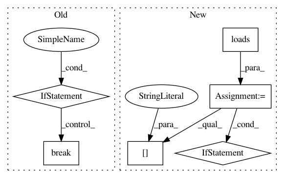

d262a0d3c567cf0543760bd238f67411acb697c2,QUANTAXIS/QAFetch/QAhuobi.py,,QA_fetch_huobi_kline,#Any#Any#Any#Any#Any#,130
Before Change
break
if (retries == 0):
// 成功获取才处理数据，否则继续尝试连接
if (len(klines) == 0) or \
(end_time == klines[-1].id) or \
(start_time == klines[0].id):
break
// 转换成DICT，mongodb不接受专有类型
for kline in klines:
time.strftime("%Y-%m-%d %H:%M:%S", time.localtime(kline.id))
datas.append(kline.__dict__)
// 狗日huobi.pro的REST API kline时间戳排序居然是倒序向前获取，必须从后向前获取，而且有数量限制，Request
After Change
if (retries == 0):
// 成功获取才处理数据，否则继续尝试连接
msg_dict = json.loads(req.content)
if (("status" in msg_dict) and (msg_dict["status"] == "ok") and ("data" in msg_dict)):
if len(msg_dict["data"]) == 0:
return None
for kline in msg_dict["data"]:
datas.append(kline)
// 狗日huobi.pro的REST API kline时间戳排序居然是倒序向前获取，必须从后向前获取，而且有数量限制，Request
// < 2000,
if len(datas) == 0:
return None
// 归一化数据字段，转换填充必须字段，删除多余字段
In pattern: SUPERPATTERN
Frequency: 3
Non-data size: 6
Instances
Project Name: QUANTAXIS/QUANTAXIS
Commit Name: d262a0d3c567cf0543760bd238f67411acb697c2
Time: 2020-02-26
Author: 11652964@qq.com
File Name: QUANTAXIS/QAFetch/QAhuobi.py
Class Name:
Method Name: QA_fetch_huobi_kline
Project Name: sloria/TextBlob
Commit Name: 7ef05274835b2272b1b431d3633d0559db684197
Time: 2015-06-08
Author: jschnurr@gmail.com
File Name: textblob/translate.py
Class Name: Translator
Method Name: _get_translation_from_json5
Project Name: GoogleCloudPlatform/PerfKitBenchmarker
Commit Name: af164f572888a7ebdd2e6d297f6e35d98d598e53
Time: 2021-03-15
Author: tohaowu@google.com
File Name: perfkitbenchmarker/providers/gcp/gce_virtual_machine.py
Class Name: GceVirtualMachine
Method Name: UpdateInterruptibleVmStatus